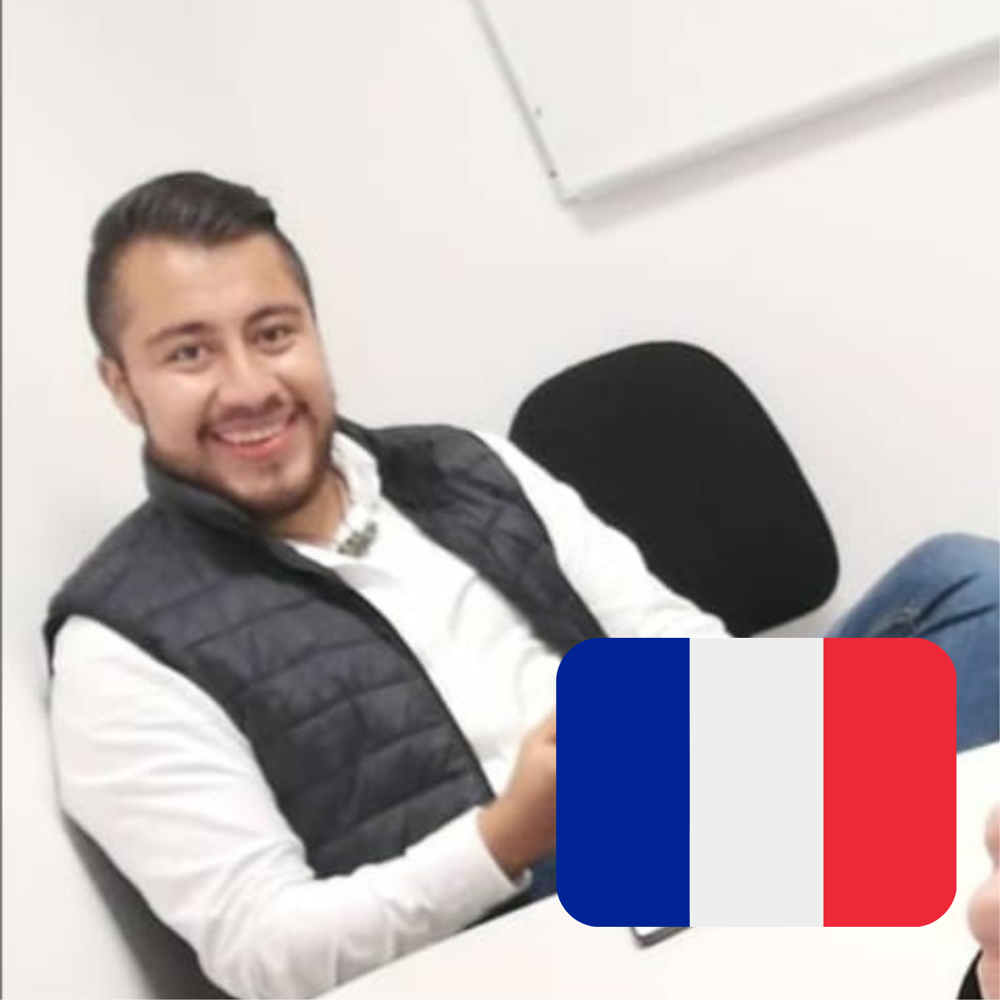
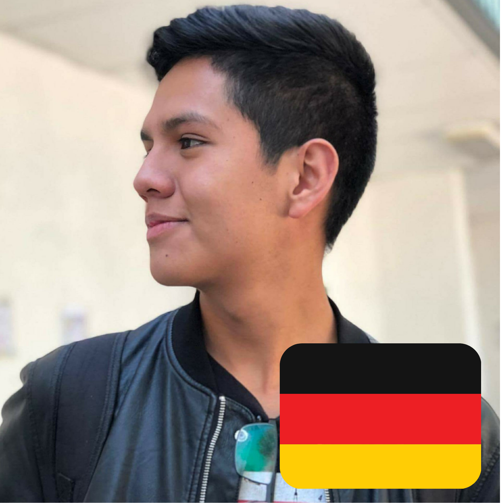
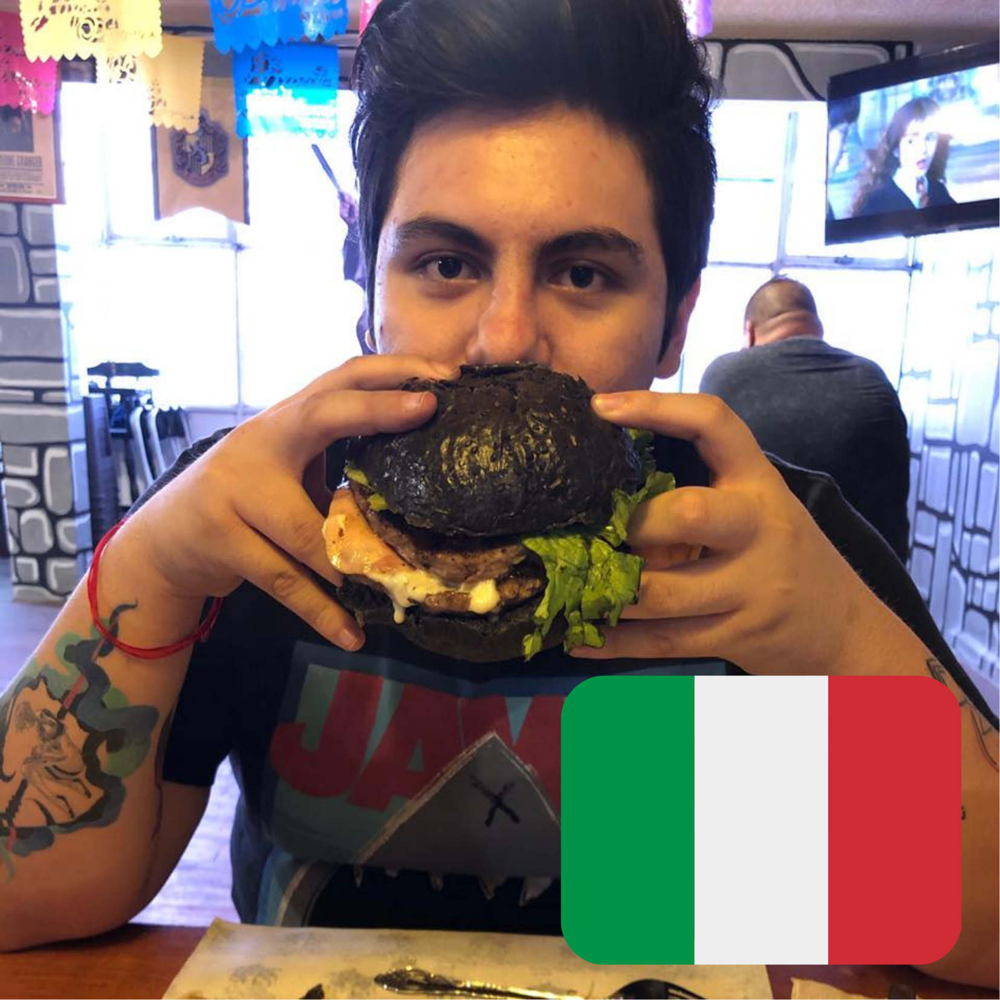
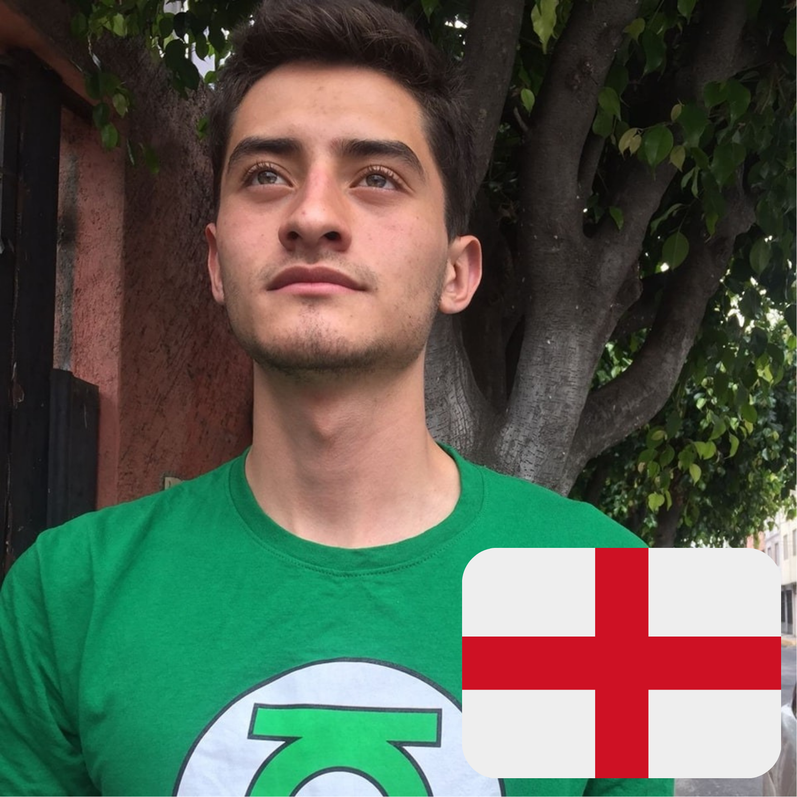

¡ARTISTAS DE LA DECADA!
Estas jóvenes promesas del arte cada día crecen más y demuestran el talento que llevan dentro. Se rumora que uno de ellos podría ganar el “PINCEL DE ORO 2021”
Ale Dubois Cruz
Hombre con una vida difícil. Nació en las favelas francesas, pero con el apoyo de su tío “El Messi” pudo terminar su carrera en artes contemporáneas.

Antonio Schulz
Criado por una familia granjera a las afueras de Frankfurt, el pequeño toñin vendió lana de oveja para comprar su primer pincel.

Adrian Bucerrati
Su familia adoptiva lo encontró en los canales de Venecia flotando en una caja junto a un par de pintura y pinceles y desde entonces se enfocó a su destino como pintor.

Anthony James Bond
Heredero del talento de Pablo Picasso y dueño de la técnica “Pintura del alma”, Anthony va por su 3er Pincel de oro.

Josefino Granados
Entró a la escuela de artes a los 15 después de hacer una obra de arte en una servilleta en el Mc donal's de su barrio.
Elma Leprechau
Nacida con el don de los mil colores es capas de pintar y diferenciar el color verde fosforescente y el amarillo chillón.
Logros internacionales
A continuación, se enlistan los logros de cada uno de los artistas.
| Nombre | Obras vendidas | Pincel de Oro |
|---|---|---|
| Ale Dubois Cruz | 986 | 1 |
| Antonio Schulz | 2 | 3 |
| Adrian Bucerrati | 56 | 9 |
| Anthony James Bond | 11 | 4 |
| Josefino Granados | 10 | 3 |
| Elma Leprechau | 19 | 1 |